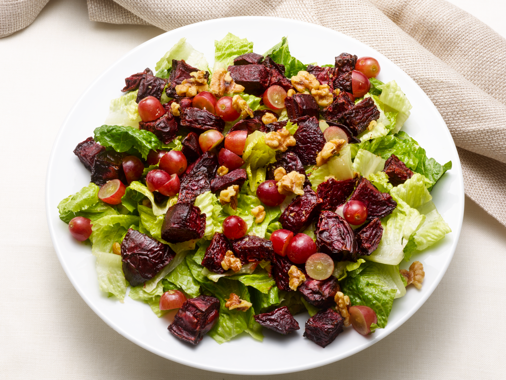
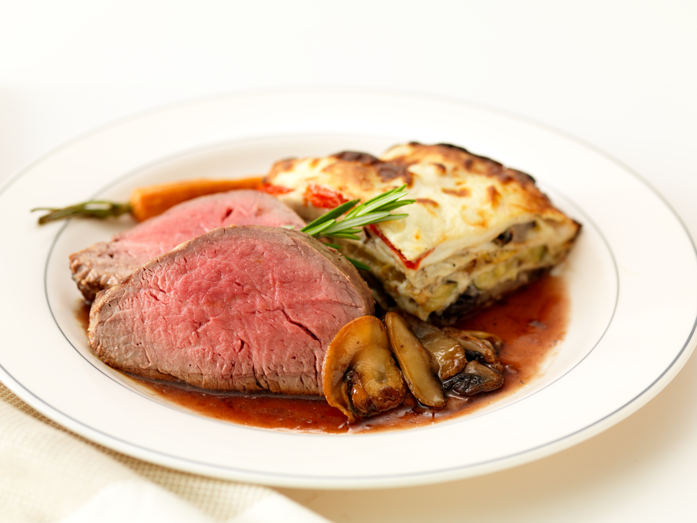
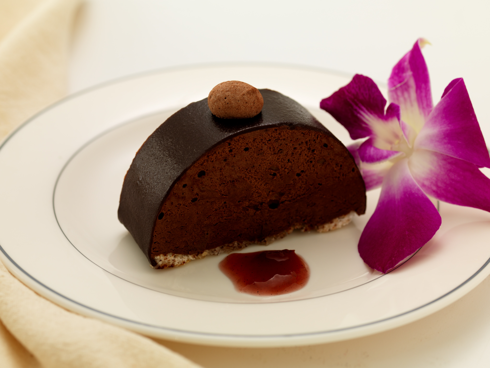

Bagels With smoked salmon, tomato and onion.
With plain, scallion and honey walnut cream cheese
Homemade Muffins Blueberry, Cranberry, Bran, Sunsational, Corn, and Banana Walnut
Croissants
Scones
Miniature Scones
Coffee Cake
Tuna Salad
Egg Salad
Yogurt Parfait with berries and granola
Warm Cheese Blintz Souffle
Crepes filled with cheese, and a hint of lemon served with fresh blueberry sauce.
Noodle Kugel
Egg noodles, baked with sweet custard and mixed with fresh and dried fruit.
Eggs
Hard Boiled or Scrambled
Quiche
Tomato and cheddar or spinach and feta.
Hors D'oeuvres, Hot
Mushroom Strudel
Duxelle of mushrooms wrapped in layers of phyllo dough
Honey Chicken
Tempura battered chicken, wok fried until crispy, drizzled with honey and sesame seeds
Peking Ravioli Pan fried miniature dumplings filled with spiced pork or chicken and leeks, served with Asian dipping sauce
Peking Duck
Mooshi pancakes filled with Cantonese style roast duck, scallions and hoisin sauce
Spanikopita
Triangles of phyllo dough filled with sauteed spinach and feta
Stuffed Mushrooms
Mushrooms stuffed with spinach and feta or sweet Italian sausage or toasted bread crumbs mixed with chopped mushrooms and fresh herbs
Artichoke and Cheese Melt
A rich, luscious dip of artichoke hearts, parmesan and cheddar cheese, baked and served with toasted pita triangles
Chicken Teriyaki
Chicken marinated in Asian spices until tender, grilled and served on skewers with Teriyaki dipping sauce
Chicken Satay
Chicken marinated in Thai spices, grilled and served with a hot and sweet peanut sauce
Palmiers With Prosciutto And Parmesan
Puff pastry "elephant ears," layered with prosciutto, parmesan cheese and honey mustard
Potato Pancakes
Crispy mini pancakes served with sour cream and caviar or applesauce
Beef Teriyaki
Thinly sliced sirloin marinated in Asian flavors and served on skewers
Vegetable Cheese Tortillas
Flour, spinach and tomato mini-tortillas filled with sweet and hot chilies, corn, cheddar, Monterey Jack, rice and black beans
Tempura
Lightly battered vegetables, wok-fried and served with traditional Tempura dipping sauce
Salmon Toasts
Thin pieces of toast layered with salmon, spinach, red peppers, and cream cheese
Baked Brie
A whole brie round covered with pastry and baked with dried fruits and pecans
Mini Flat Bread Pizza
Miniature rounds of freshly baked flat breads layered with caramelized onion and fresh mozzarella, sauteed spinach and goat cheese or barbeque chicken with fontina
Dates, Chestnuts, Water chestnuts, Scallops or Chicken Livers wrapped in Bacon
Miniature Roquefort and Apple Tarts
Delicate pastry filed with imported Roquefort cheese and Granny Smith apples
Red Peppers on French bread
Fresh red peppers sauteed in extra virgin olive oil and garlic, served on French bread
Goat Cheese and Tomato Tarts
Rich tart dough filled with goat's cheese and oven roasted tomatoes
Miniature Rueben Sandwiches
New York deli corned beef, sauerkraut and Russian dressing on grilled pumpernickel bread
Frankfurters in Puff Pastry
Miniature all beef kosher hot dogs wrapped in puff pastry
Tandori Chicken
Chicken breast marinated in Indian spices and yogurt
Curried or Sweet and Sour Meatballs.
Cheddar Cheese and Chutney on Toast Rounds
Classic flavors of cheddar and chutney, melted on country style toast rounds
Smoked Turkey on Herbed Pita Triangles with Chutney
Mini smoked turkey and chutney sandwiches served on pita triangles that have been brushed with extra virgin olive oil and fresh herbs
Caramelized Onion wrapped in a phyllo pouch
Roasted Eggplant wrapped in a phyllo pouch
Small purses of tender phyllo, filled with eggplant roasted with herbs, spices and pine nuts
Wild Mushroom Turnovers
Rich pastry filled with lightly seasoned portabella, shitake and oyster mushrooms
Mushroom Profiterole
Brioche filled with fresh mushroom duxelle with walnuts and cream cheese
Pear and Bleu Cheese Stars
Pears, Bleu cheese and red wine hand-wrapped in phyllo dough
Portobello Mushroom Stacks
Grilled portabella mushrooms, sweet roasted peppers, basil pesto, parmesan cheese, layered with polenta and stacked on a bamboo skewer
Stuffed Dates
An unusual treatment of dates, filled with machengo cheese, baked until melted and topped with a touch of hot pepper jam
Mushroom Empanada
Portabella and white mushrooms wrapped in corn puff pastry
Roasted Butternut Squash Tart
Rich pastry filled with lightly seasoned, roasted butternut squash
Mini Flat Bread Pizza
Miniature rounds of freshly baked flat breads layered with caramelized onion and fresh mozzarella, sauteed spinach and goat cheese or barbeque chicken with fontina
Hors D'oeuvres, Cold
Roast Tenderloin of Beef
Rare roasted tenderloin, thickly sliced, served on French bread with horseradish cream
Seared Tuna Sushi grade tuna barely seared, served on rice crackers, with wasabi aioli and caviar
Mini Lobster Club
Fresh lobster, Avocado, Bacon and Citrus Aioli served on Challah
Salmon Pinwheel
Lavash flat breads rolled around scallion cream cheese and Scottish smoked salmon
Torta of Cheese, Sundried Tomato and Pesto
A "cake" made of layers of goat's cheese, sundried tomatoes and homeade basil pesto, served with crackers
Snow peas and Boursin Cheese
Tender snow peas split open and filled with garlicky boursin cheese
New Potato Slices with Sour Cream and Caviar
Tender red new potatoes, sliced into rounds and served with a dollop of sour cream and caviar
Baba Ghanoush
Homemade, traditional Middle Eastern style roasted eggplant, seasoned with lemon and tahini, served with toasted pita triangles
Hummus
We make our own hummus from chickpeas, garlic and extra virgin olive oil, served with toasted pita bread
Stuffed Grape Leaves
Grape leaves filled with seasoned rice and pine nuts
Steamed Mussels
Extra large PEI mussels steamed in wine and garlic broth, served in the shell
Large Shrimp with Homemade Cocktail Sauce Large shrimp cooked to perfection and served with our horseradish cocktail sauce
Marinated Shrimp with Capers, Artichokes and Mushrooms
Smoked Salmon
Thick slices of Scottish smoked salmon on fresh pumpernickel with scallion caper butter
Chopped Herring
Wine marinated herring mixed with sour cream and with Granny Smith apples, served with crackers or melba toast
Guacamole
Our special recipe of ripe avocados, lime juice, jalapenos, scallions and grape tomatoes served with salsa and corn tortilla chips
Country Style Pate on French bread with Cornichons and assorted Mustards
Lobster Salad in a Phyllo Cup
Crab and Cucumber Roll Lump crab meat, seasoned with herbs and spices and rolled sushi style in paper thin cucumber slices
Stationary Displays
Raw Bar Clams, Oysters, King Crab Legs, Shrimps Displayed on ice with Traditional Garnishes
International Displays French, Italian, Middle Eastern, Chinese, Mexican, or American
Antipasto Display A variety of Italian cold cuts, cheeses, fresh and marinated vegetables, served with French Bread
Carving Stations Glazed Ham, Roast Tenderloin of Beef, Glazed Corned Beef, Leg of Lamb, Roast Turkey, Smoked Turkey served with assorted Breads, Rolls, Mustards, Homemade Mayonnaise, Horseradish Sauce, Chutney and Cranberry Orange Relish.
International Cheese Display served with artisan crackers.
Fajita Bar Marinated Chicken, Beef and shrimp served sizzling with peppers, onions and traditional toppings
Bruschetta Bar Grilled French Bread with a variety of toppings to include marinated tomatoes, olive tapenade, roasted red peppers and mozzarella cheese.
Soup Bar The guests choice of soups served in demitasse cups.
Miniature Pizza Display An assortment of miniature pizzas served on candle-heated slate.
Artichoke and Cheese dip With Toasted Pita Chips
Crudite with homemade dips

Salads
Winter Citrus Salad Blood oranges, navel oranges and pink grapefruit dressed with a citrus vinaigrette, French feta and fresh mint
Costa Del Sol Salad
Thinly sliced raw fennel, spinach and fresh oranges tossed with red onion, feta and herbed vinaigrette
CWD Signature House Salad
Fresh field greens tossed with dried cranberries, spiced pecans and Chevre, balsamic vinaigrette
Garden Salad
Seasonal crisp lettuces, tomatoes, cucumbers with balsamic vinaigrette
Micro greens and watercress salad
Sweet tender micro greens and peppery watercress served with roasted sliced pears, walnuts and bleu cheese
Caesar Salad
Traditionally made with hearts of romaine lettuce, homemade croutons shaved parmesan and our special dressing
Beet Stack Salad Roasted, seasoned red beets, stacked with Chevre and served over filed greens with honey orange vinaigrette
Winter Salad Tender Boston bibb, watercress, pomegranate seeds, oranges and thinly sliced scallions, tossed with citrus vinaigrette
Arugula Salad Baby arugula with fennel, cherry tomatoes and feta cheese
Field Greens and Roasted Pear Salad Fresh greens with roasted sliced pears, grape tomatoes, shaved parmigano cheese and balsamic vinaigrette
Grapefruit Supremes Salad Fresh field greens with grapefruit supremes, crumbled gorgonzola and scallions tossed with grapefruit vinaigrette.
Soups
Carrot Ginger
Carrot soup spiced with ginger and Creme fraiche.
Southwestern Corn Chowder
Sweet corn chowder with jalapenos and sweet potato.
New England Clam Chowder
Thick and creamy with whole belly clams and large chunks of potato.
Cream of Five Onion
Five varieties of onions in a silky garlic broth
Tomato Soup Roasted Tomato Soup with parmesean crisp.
Creole Chicken Tender pieces of chicken breast with rice and Hatian spices.
Tuscan Vegetable A hearty Italian vegetable soup
French Style Fish Soup The daily catch in a seafood-tomato stock
Cold Melon Soup Honey Dew Soup with mint, served cold with Serrano ham and Creme fraiche.
Watermelon Soup Watermelon soup served cold with crumbled feta and balsamic reduction.

Entrees
Roast Tenderloin of Beef
Oven roasted beef served au jus
Roast Prime Rib of Beef Traditional slow roasted au jus
Stir Fried Beef with Oriental Vegetables Asian marinated sirloin stir fried with peapods and assorted vegetables in a rich soy sauce
Short Rib of Beef Beef short ribs braised in red wine until meltingly tender
Chicken Bella Chicken tenderloins sauteed with sundried tomatoes, mushrooms and artichokes
Chicken Andre Chicken tenderloins and oranges sauteed in Grand Marnier
Chicken Marsala Chicken tenderloins sauteed with mushrooms in a rich Marsala wine sauce
Boneless Chicken Roulades Breast of chicken filled with your choice of zucchini, roasted peppers and Chevre; fontina, artichokes and sundried tomatoes; dried cherries and ricotta; mushroom duxelles; white and wild rice with dried fruits or autumn apple stuffing.
Autumn Chicken Roulades Boneless breast of chicken filled with apple brioche stuffing, served with an apple cider, cream and Dijon mustard reduction.
Jambalaya Cajun jambalaya of sausage, chicken and seafood with just the right amount of heat and spice
Chicken Cordon Bleu Boneless breasts filled with gruyere and parmesan cheeses and black forest ham, baked and served with our special cream sauce
Rock Cornish Game Hen Oven roasted Cornish Game Hens coated in maple soy glaze
Roast Stuffed Turkey A New England feast of oven roasted turkey stuffed with homemade cornbread, apple and chestnut stuffing served with our pan jus gravy
CWD Signature Roast Rack of Lamb Oven roasted Australian lamb coated in fresh breadcrumbs, herbs and a touch of Dijon mustard and baked until medium rare perfection
Roast Loin of Pork Stuffed with Fruit
Succulent pork loin stuffed with a mixture of brandy soaked prunes, figs, apples and caramelized onions served with an apple cider reduction
Baked or Grilled Swordfish Served with your choice of mango salsa or lemon butter sauce
Baked New England Scrod Topped with rich butter crumbs
Seafood Newburg Assorted seafood in a rich creamy sauce made elegant with a hint of sherry and nutmeg
Grilled or Baked Fresh Alaskan Salmon Served with your choice of mango salsa, dill sauce or lemon butter sauce
Stuffed Filet of Sole Baked with raisin and spinach stiffing and served with a light lemon butter sauce
Soy-Citrus Glazed Black Cod Oven roasted fresh black cod, glazed with a sweet and citrusy soy marinade and garnished with mint and scallions
Pan Seared Sea Bass Pan Seared Chillean Sea Bass with a vegetable medley and tomato broth
Vegetables
CWD Signature Acorn Squash Vegetable Bouquet A special presentation of acorn squash ring glazed with maple syrup, cinnamon and a hint of sweet butter, filled with the seasons freshest assortment of steamed or sauteed vegetables
Haricot Vert
Slender French green beans sauteed until crisp tender and garnished with toasted pecans or roasted red peppers
Vegetable Medley Julienne Sauteed or roasted julienne cut seasonal vegetables infused with garlic olive oil
Fresh Asparagus in Season The seasons' young and sweet asparagus grilled, steamed or sauteed until just tender and dressed with a touch of garlic infused olive oil
Sauteed Autumn Vegetables
The season's freshest vegetables, oven roasted with our special seasoning
Sauteed Summer Vegetables in Season The season's freshest vegetables grilled, steamed or sauteed until just tender
Ratatouille A delicious Fresh Provencal stew of roasted zucchini, squash and eggplant in a rich and savory tomato sauce Sauteed
Snow peas and Red Pepper Tender snow peas sauteed until crisp, sprinkled with sea salt and fresh cracked pepper and garnished with roasted red peppers
Glazed Baby Carrots Tender petite carrots steamed then glazed with honey, ginger and brown sugar

Dessert
Swiss Style Crepes with Fruit Sauce
Cranberry Nut Tart in Season
Chocolate Cake
Sliced Apple Tart Flourless
Chocolate Hazelnut Cake
Viennese Sweet Table
Chocolate Chestnut Cake
Cheesecake
Miniature French Pastries
Lemon Mousse Cake
Old Fashioned Caramel Apple Cake
Fresh Strawberries with Chocolate Fondue in Season